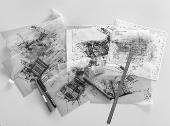

Étude de faisabilité
L’étude de faisabilité vérifie de façon réglementaire, technique et financière l’ensemble des possibilités constructives que permet l’assiette foncière déterminée pour le projet. L’ensemble de ces analyses permettront à FAAB de poser les intentions urbaines et architecturales au regard du contexte et de l’environnement du site, ainsi que de réaliser les premières esquisses de projet.
Cette phase est la base de tout type de projets. Elle constituera la première étape avant la conception de votre projet.
Notre objectif principal est le respect de votre enveloppe financière ainsi que l’anticipation de l’ensemble des contraintes éventuelles.
FAAB Architecte vous accompagne dans l’intégralité de vos projets de construction neuve, de transformation, rénovation ou de réhabilitation, de l’idée à la réalisation.